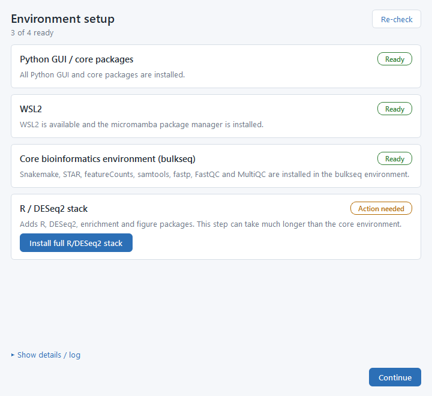
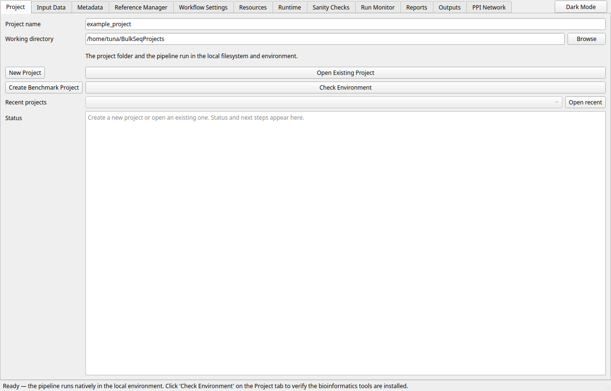
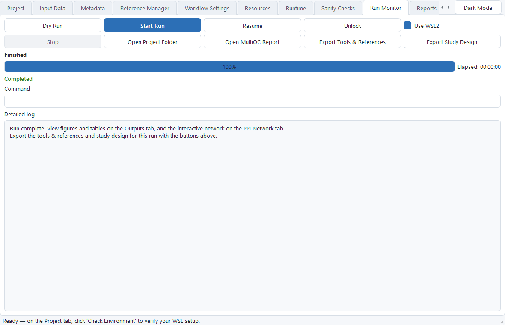
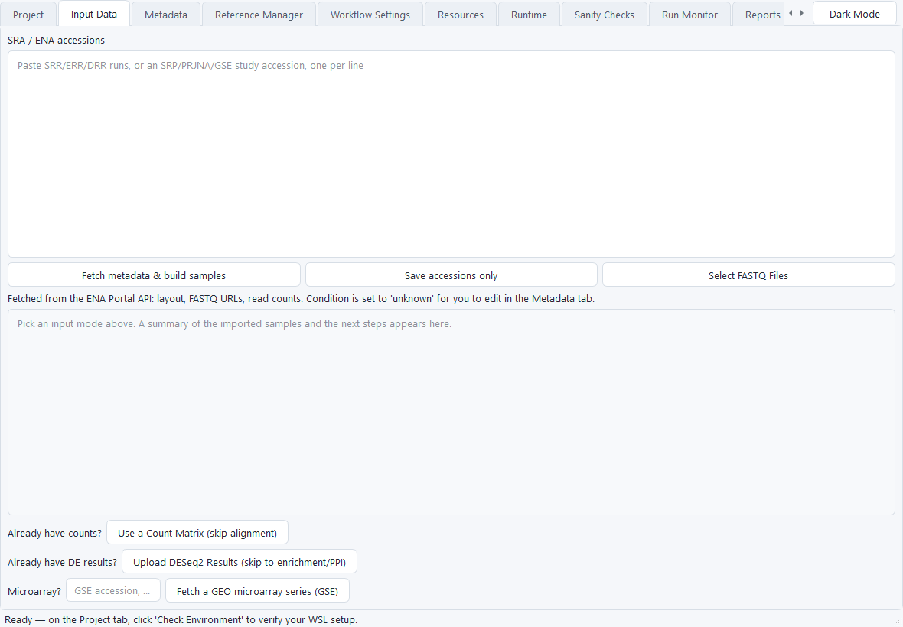

Bulk RNA-seq & microarray, no code
BulkSeq Studio
A free desktop app that takes you from raw reads or a count table to differential expression, functional enrichment, protein-interaction networks, and publication figures, without writing a single line of code.
BulkSeq Studio is for biologists who want to analyse their own bulk RNA-seq or microarray data without learning the command line. You point a tabbed graphical interface at your data and a reference genome; it runs a transparent Snakemake pipeline and produces a count matrix, a DESeq2 (or limma) results table, GO/KEGG enrichment, a STRING interaction network, and figures. Everything runs locally on your own machine, on Windows the pipeline runs inside WSL2, and on Linux it runs natively; either way the results are identical and every parameter, tool version, and reference is recorded so a run can be reproduced later.

What you get
Start from anything
Paste SRR/SRP/PRJ accessions and the app fetches the FASTQ files and builds the sample sheet, or point it at local FASTQ files. Already have counts? Upload a gene-by-sample table to skip alignment. Already have a results table or a GEO microarray series (GSE)? Those go straight to figures and enrichment too.
QC, trimming & alignment
FastQC and MultiQC report quality, fastp trims, and you choose the aligner: STAR (the default, used in most studies), HISAT2 (low memory, for large crop genomes), or Salmon (alignment-free, lightest of all). Optional SortMeRNA rRNA filtering is built in. All three routes feed the same count matrix.
Differential expression
RNA-seq runs through DESeq2 with apeglm shrinkage, VST normalization, and configurable significance thresholds; microarray series run through limma. You set the design formula and contrast in plain dropdowns and get separate up- and down-regulated gene lists.
Functional enrichment
GO over-representation and GSEA run separately on the up- and down-regulated sets, with KEGG pathway analysis for any organism that has a KEGG code, GO through g:Profiler, and disease-ontology terms for human and mouse. You can also supply your own gene sets for a custom ORA and GSEA run.
Protein networks
A dedicated tab embeds the STRING protein-interaction network in an interactive cytoscape.js view: hover a protein for its fold-change and degree, re-layout, recolour by fold-change, resize by degree, filter by confidence, and export PNG, SVG, or Cytoscape files.
Built for non-model organisms
Crops and fungi are first-class. KEGG enrichment runs for any organism with a KEGG code, and GO terms come through g:Profiler without needing a Bioconductor OrgDb, so an organism is never skipped just for lacking one. Validated on rice, Fusarium graminearum, and Drosophila.
Get started
Install & setup
BulkSeq Studio is free and runs on Windows and Linux. You download one file, launch it, and let the app set up the bioinformatics tools for you the first time. No coding, and on Windows no administrator account for the install itself.
Windows
Two downloads on the Releases page, pick either:
- Installer —
BulkSeqStudio-Setup-0.15.0.exe. A per-user install that needs no administrator rights; afterwards you launch it from the Start Menu. - Portable —
BulkSeqStudio-Portable-0.15.0.zip. Unzip it anywhere and double-clickBulkSeqStudio.exe. Nothing is installed.
Linux
Download from the same Releases page and pick either:
- AppImage — a single self-contained file. Make it executable, then run it; nothing to extract or install.
- Tarball — extract it and run the bundled launcher
BulkSeqStudio.
Both bundle the interface, so you do not need system Python. They are built on Ubuntu 24.04 and need glibc 2.39 or newer.
What is WSL2, and why does Windows need it?
The bioinformatics tools that do the analysis (alignment, counting, DESeq2, enrichment) are Linux programs. On Windows, BulkSeq Studio runs them inside WSL2 — the Windows Subsystem for Linux, a lightweight Linux that Windows runs quietly in the background. You never open a Linux terminal yourself. The window you see is only the graphical interface; the actual computation happens in a managed micromamba environment inside WSL2. The app can enable WSL2 and install that environment for you from its setup screen, so you do not configure anything by hand.
On Linux there is no WSL: the same interface runs the same pipeline directly in a local environment, and the results are identical.
Install and first run, step by step
-
Download and open the app
Grab the Windows installer or portable ZIP (or, on Linux, the AppImage or tarball) from the Releases page, then launch BulkSeq Studio. The per-user Windows install does not ask for an administrator password.
-
Let the Environment setup screen check your machine
On first launch (and any time later from Check Environment on the Project tab), a readiness screen checks the pieces it needs and shows each one as Ready or Action needed, with an install button when something is missing.
-
Install anything marked "Action needed"
Work top to bottom: click each Install… button, then press Re-check to refresh the statuses. The downloads run inside your own WSL user account with no sudo password. Show details / log expands the full setup log if a step needs attention.
-
Click Continue when the header reads "4 of 4 ready"
Once every row is Ready, the screen is done. You can already create projects, edit metadata, and build configs while the tools finish installing; only starting a pipeline run needs them.

The four readiness rows (Windows first run)
- Python GUI / core packages — the libraries the interface itself needs.
- WSL2 — the lightweight Linux the pipeline runs inside, plus the micromamba package manager. If WSL2 is not yet enabled, this single step opens an Administrator PowerShell window once (Windows requires elevation only to turn the feature on), and you may be asked to reboot.
- Core bioinformatics environment ("bulkseq") — Snakemake, the three aligners (STAR, HISAT2, Salmon), featureCounts, samtools, fastp, FastQC, and MultiQC. The download takes a few minutes.
- R / DESeq2 stack — R with DESeq2, the enrichment packages, and the figure toolchain. This is the largest, slowest install and can take a while; you only do it once.
On Linux the WSL2 row does not apply — the pipeline runs locally and those controls are hidden.

Your first analysis
Quick start
From a public study to differential expression, enrichment, and an interactive protein network, without writing any code. The example below follows the most common path: paste study accessions, let the app fetch the data, and run.
-
Create or open a project
On the Project tab, make a new project folder. The app scaffolds the
config/folder, a copy of the Snakemakeworkflow/, and a provenance manifest. On Windows, click Use WSL filesystem when prompted so the project lives on the fast Linux disk rather than aC:\drive. -
Choose an input
On the Input Data tab, pick how your data comes in. The simplest is to paste SRR / SRP / PRJ accessions and click Fetch metadata & build samples; the ENA fetch reads the layout, FASTQ URLs, and read counts and builds the sample sheet for you. You can also select local FASTQ files, or skip alignment entirely with Use a Count Matrix, Upload DESeq2 Results, or a GEO microarray series (GSE).
-
Confirm the metadata and contrast
On the Metadata tab, the samples appear in an editable table. Assign each one a
condition(for example treated vs control) and check that the layout (paired or single-end) is correct. These groups define the comparison DESeq2 will run. -
Pick a reference and analysis options
On the Reference Manager tab, choose your organism from the Ensembl / NCBI RefSeq catalog (or import a custom genome and annotation), then click Use Selected Preset. A reference is required before a run will start. On the Workflow Settings tab, set the aligner (leave it on STAR if unsure), the DESeq2 design and contrast, the
alphaand|log2FC|thresholds, and how to handle organellar genes. The defaults are sane, so most first runs only need the contrast confirmed. -
Start the run and watch the Run Monitor
Clear any flagged items on the Sanity Checks tab, then go to Run Monitor and click Start Run. The progress bar and a plain-language current phase (Downloading, Aligning, DESeq2, and so on) track the pipeline above the raw log. Use Stop to cancel, Resume to continue an interrupted run, and Unlock if a run was interrupted hard.

The Run Monitor after a finished run. The Export Tools & References and Export Study Design buttons save the exact tool versions, reference, and study design for that run. -
Read the results
When the run finishes, the Outputs tab lets you browse the count matrix and DESeq2 table and view the figures (PCA, volcano, MA, heatmaps); toggle Vector (SVG) for a crisp preview at any zoom. Open the PPI Network tab to explore the STRING protein network interactively, and click Open MultiQC Report on the Run Monitor for the read-quality summary. Export the tools & references and study design files to capture the run's provenance.
Five ways in
Input modes
BulkSeq Studio meets your data wherever it already is. You can start from raw reads, from public accessions, from a count table, from a finished differential-expression table, or from a GEO microarray series. The mode you choose decides which steps run and which outputs you get; everything downstream of the entry point is shared, so the figures and enrichment look the same no matter how you got there.
1. SRA / ENA accessions
Paste SRR / SRP / PRJ accessions and the app fetches the ENA metadata, builds the sample sheet (layout, FASTQ URLs, read counts), and downloads the reads for you.
Unlocks the full pipeline: FastQC / MultiQC, fastp trimming, alignment, gene counting, DESeq2, enrichment, figures, and the PPI network.
2. Local FASTQ files
Already downloaded your reads? Point the app at FASTQ files on disk. Single-end or paired-end, detected automatically.
Same full pipeline as the accession route, minus the download step: QC, trimming, alignment, counting, DESeq2, enrichment, figures, PPI.
3. Count matrix (skip alignment)
Upload a gene-by-sample counts table (featureCounts output or any TSV/CSV) to skip download, QC, and alignment.
Goes straight to DESeq2, then figures, enrichment, statistics, and the PPI network. Use this when alignment is already done elsewhere.
4. DESeq2 results table (bring your own)
Upload a finished differential-expression table (the format DESeq2::results() writes). Required columns are gene_id, log2FoldChange, and padj; the up- and down-regulated lists are derived from your significance thresholds.
No FASTQ, alignment, counts, or DESeq2 step. Produces functional enrichment, the volcano / MA / p-value figures, the STRING PPI network, the MSigDB set-overlap test, and a preranked .rnk. Outputs that need per-sample counts (PCA, sample-correlation, count heatmaps, the Wilcoxon test, the normalized-expression export) are skipped.
5. GEO microarray series (GSE)
Enter a GEO series accession. The app ingests the normalized intensities (GEOquery series matrix, or RMA from raw Affymetrix CEL), maps probes to gene symbols, and runs limma differential expression into a DESeq2-shaped results table.
From there it runs the same figures, enrichment, genes-of-interest, and networks as the RNA-seq routes. RNA-seq series pasted here are redirected to the SRA box.

What the pipeline does
Analysis options
BulkSeq Studio runs a fixed, transparent sequence of steps from reads to results. Each stage exposes a small set of choices on the Workflow Settings tab. The defaults are set for a standard study, so a typical run only needs an organism, a contrast, and the data.
Quality control and trimming
Every FASTQ or SRA run starts with FastQC on the raw reads, then adapter and quality trimming with fastp, then FastQC again on the trimmed reads. The per-sample reports are collected into a single MultiQC summary you can open from the Run Monitor.
Trimming is on by default. If your reads are already trimmed, uncheck the fastp trimming option and the raw reads go straight to the aligner. The before/after FastQC steps and the MultiQC inputs follow the same setting.
Optional ribosomal RNA removal
You can filter ribosomal RNA out of the reads with SortMeRNA before alignment. When the rRNA filtering option is on, trimmed reads are matched against the SortMeRNA rRNA database and only the non-rRNA reads continue to the aligner. This runs on all three aligner routes. The rRNA database is downloaded and indexed once, each sample is filtered in its own working directory, and the per-sample rRNA percentage is added to the MultiQC report. The default reference is smr_v4.3_default_db; you can point sortmerna.database at a local FASTA, a FASTA URL, or a database tarball instead.
Alignment and quantification
Three aligners are available, all validated end to end. They feed a gene-level count matrix in the same format, so everything after counting (differential expression, enrichment, the network, every figure) runs identically whichever you pick.
- STAR (default): the standard splice-aware aligner; the genome index grows with genome size and needs the most RAM. Writes sorted BAM files.
- HISAT2: a graph aligner with a small index and low memory, for large crop genomes that overflow STAR while you still want BAM files.
- Salmon: alignment-free transcriptome quantification, the lowest memory of the three and the fastest. No BAM files; the transcriptome is built automatically from the genome and annotation.
Library strandedness is detected automatically on all three routes, so a stranded library is counted correctly without you setting it by hand.
The quantifier is matched to the aligner. featureCounts is the default counter. With the STAR aligner the Quantifier control becomes a real choice: alongside featureCounts you can pick STAR gene-counts, which reads gene counts straight from STAR's own --quantMode GeneCounts output with no extra counting pass. STAR gene-counts is a 0.15.0 option, validated against featureCounts on the same BAMs at Pearson r of about 0.998 (unstranded) to 1.000 (stranded). HISAT2 always pairs with featureCounts and Salmon with tximport, so they cannot be mis-set.
Differential expression
The differential-expression engine follows the input mode. RNA-seq and count-matrix runs use DESeq2 (with apeglm shrinkage and VST); GEO microarray runs use limma and produce a DESeq2-shaped results table, so the figures and downstream steps are the same. You configure the design formula and the contrast (numerator, denominator, reference level), the significance threshold alpha, and the absolute log2 fold-change cutoff, which together split the genes into up- and down-regulated lists. A TOST equivalence test is also run to flag genes that are statistically unchanged, the complement of the significance call.
Functional enrichment
Enrichment runs separately on the up- and down-regulated sets. GO over-representation and GSEA come from clusterProfiler when a Bioconductor OrgDb is installed for the organism (human, mouse, fly, and others); for human and mouse it also adds disease-ontology terms. Organisms without an OrgDb fall back to g:Profiler for GO. KEGG pathway ORA and GSEA run for any organism that has a KEGG code, even without an OrgDb, so fungi, bacteria, and other non-model organisms are not skipped. Selecting an organism preset auto-configures its enrichment databases and STRING taxon.
You can also supply your own gene sets: a GMT file and/or an id-to-term annotation table, with an optional background list for the over-representation universe. This runs a clusterProfiler ORA and GSEA alongside the built-in GO and KEGG and is organism-agnostic, so it works where the built-in GO route is skipped. Custom gene-set enrichment is a 0.15.0 option. The gene IDs must use the run's identifier format; a namespace mismatch is flagged as REVIEW_REQUIRED rather than returned as a silent empty result.
For a focused look, a genes-of-interest list produces its own z-scored heatmap, per-condition expression panel, and counts table from an existing run without re-analysis. The IDs you paste are matched to the run's genes by locus tag, Ensembl/RefSeq ID, or symbol; when few or none match, the report leads with a warning and shows examples of the run's actual ID format so you can correct the list.
Protein-interaction networks
BulkSeq Studio builds a STRING protein-protein interaction network for the significant genes and seeds it by symbol or, for symbol-less annotations like the FGSG_ locus tags of Fusarium graminearum, by gene ID. The network exports to Cytoscape as GraphML, SIF, and cytoscape.js JSON for external editing. A dedicated PPI Network tab embeds the same network in an interactive view.

Extra statistics
Beyond the differential test, the pipeline writes a set of diagnostics: sample-to-sample correlation heatmaps (Pearson and Spearman), a Wilcoxon rank-sum concordance check, the TOST equivalence call described above, and an MSigDB Hallmark set-overlap.
Non-model organisms
Crops and fungi that have no Bioconductor OrgDb are not left without downstream analysis. As long as the organism has a KEGG code and a STRING taxon, KEGG enrichment and the STRING network still run, and g:Profiler supplies GO where it is available. This is how rice, the other crop presets, and Fusarium graminearum reach full enrichment and network outputs.
What you get
Outputs
A finished run leaves a project folder of result tables, publication figures, a quality report, enrichment and network files, and a record of exactly how it was produced. You browse all of it inside the Outputs tab; every file is a plain CSV, PNG, SVG, or standard network format you can open or share.
Result tables
The differential-expression results come out as tab-friendly text files you can open in Excel or R:
- DESeq2 / limma results table — every gene with its log2 fold-change, p-value, adjusted p-value, gene symbol, and biotype.
- Up- and down-regulated gene lists — the significant genes split by direction, using your
alphaand|log2FC|thresholds. - Normalized expression matrix — DESeq2 normalized counts (or log2 intensities for microarray) as a gene-by-sample CSV.
- Unchanged / equivalence list — genes flagged as genuinely unchanged by the TOST equivalence test, separate from "not significant".
- Preranked
.rnk— a stat-ranked gene list for running GSEA elsewhere.
Figures
Each figure is written in two forms: a raster PNG for documents and slides, and a vector SVG that stays crisp at any zoom (toggle Vector (SVG) in the viewer to preview it). The Figure Style editor restyles and regenerates them without re-running alignment or DESeq2.
- Volcano and MA plots.
- PCA and sample-distance plots.
- Top-DEG and genes-of-interest heatmaps.
- Enrichment dotplots (GO and KEGG), GSEA running-score and ridgeplots, gene-concept and term-similarity networks.
- A raw p-value histogram and, for RNA-seq, dispersion / Cook's-distance / library-size diagnostics.
Quality report
The MultiQC report gathers FastQC, fastp trimming, and alignment statistics for every sample into one HTML page. Open it from the Open MultiQC Report button on the Run Monitor.
Enrichment tables and networks
- Enrichment tables — the GO, KEGG, and custom gene-set over-representation and GSEA results as CSV, run separately on the up- and down-regulated sets.
- STRING network files — the protein-interaction network exported as GraphML, SIF, and cytoscape.js JSON (cyjs) for editing in Cytoscape.
- Interactive PPI Network tab — the same network rendered live in the app (see below).
Genes of interest
Supply a gene list and the app generates a focused z-scored heatmap, a per-condition expression panel, and a counts table from the existing run, plus a STRING network for those genes when PPI seeding is set to the list. No re-analysis is needed.
Run provenance
When a run finishes, the Run Monitor lets you save two records of how it was produced:
- Tools & references — the tool and R/Bioconductor package versions, the reference genome and annotation with source URLs and MD5, and the enrichment database codes.
- Study design — the samples, conditions, layout, design formula, and contrasts.
sessionInfo, so a run can be reproduced later.
Validation
Benchmarks
BulkSeq Studio is validated by a benchmark suite (B1-B13) that tests the pipeline against simulated ground truth, established tools, and itself across input modes and organisms. The full benchmark snapshot — tables, figures, and pinned environments — is deposited on Zenodo, and the accompanying manuscript is under peer review.
Every number below traces to a checksummed result table in the deposited archive. Cite the snapshot as 10.5281/zenodo.20902966.
B1-B10: the core validation
Ten benchmark families, each probing one part of the default analysis (STAR to featureCounts to DESeq2 to clusterProfiler enrichment). Headline results:
| Benchmark | What it tests | Headline result |
|---|---|---|
| B1 | Correctness vs simulated ground truth (count- and read-level) | Power, precision, and fold-change recovery rise with replication; read-level FDR controlled (0.048 +/- 0.006 over 6 seeds), LFC Pearson 0.976 |
| B2 | FDR / null calibration under a true null | Raw p-values near nominal 0.05; BH false positives essentially absent at n=10 (mean 0.8 / 12000 genes); inherits DESeq2 small-sample behaviour, motivating the 4-6 replicate guidance |
| B3 | Accuracy curves (iCOBRA TPR vs observed FDR) | Power ordered n10 > n5 > n3 at every FDR; observed FDR tightens toward nominal as replication grows |
| B4 | Concordance vs nf-core/rnaseq 3.14.0 | LFC Spearman 0.97-0.99, DEG Jaccard 0.81-0.91, CAT top-100 0.85-0.93 across a fly and a fungus; all acceptance criteria met |
| B5 | Internal aligner concordance (STAR / HISAT2 / Salmon) | STAR and HISAT2 near-identical (LFC r 0.985-0.9997); Salmon agrees on fold change (r 0.94-0.996) with expected boundary-DEG differences |
| B6 | Input-mode equivalence (count-matrix, bring-your-own DESeq2) | Both entry points reproduce the FASTQ-path DESeq2 exactly (max abs diff = 0 on all result columns; up/down Jaccard 1.0) across three anchors |
| B7 | Microarray (limma) route validation | vs canonical limma-trend-robust: logFC Pearson 1.0, max abs diff 0, identical DEG sets (440 vs 440), positive control reproduced exactly |
| B8 | Multi-organism breadth + non-model enrichment | Real KEGG ORA and STRING networks for a fungus (FGSG_ locus tags) and a crop (RefSeq LOC route) without a Bioconductor OrgDb |
| B9 | Runtime / memory scaling + large-genome rescue | STAR index RAM scales with genome length (1 to 57.9 GiB) and overflows on wheat; Salmon indexes the same genomes at ~1 GiB, restoring quantification |
| B10 | Reproducibility and determinism | Identical sha256 across reruns and thread counts (4 vs 16 cores), max abs LFC diff 0; databases pinned (Ensembl 111, STRING v12.0) |
New in 0.15.0 (B11-B13)
The 0.15.0 snapshot adds three benchmarks covering the analytical surfaces introduced since 0.12.1: the STAR gene-counts quantifier, custom gene-set enrichment, and the rRNA-filtering path. Each was adversarially reviewed before deposit.
B11 — STAR gene-counts vs featureCounts
Does the new STAR gene-counts quantifier (counts from STAR's --quantMode GeneCounts) agree with the default featureCounts? Both arms ran on the same BAM and through the identical DESeq2 path, so only the counting algorithm differs.
| Dataset | Strand | Count r (log2) | LFC Pearson | DEG Jaccard (padj<0.05) | DEG Jaccard (+|LFC|≥1) |
|---|---|---|---|---|---|
| fgval (F. graminearum) | unstranded | 0.9997 | 0.9999 | 0.9950 | 0.9956 |
| fghs (F. graminearum) | reverse | 1.0000 | 1.0000 | 0.9993 | 0.9991 |
| pasilla (D. melanogaster) | unstranded | 0.9981 | 0.9969 | 0.9619 | 0.9463 |
The two quantifiers are effectively interchangeable on these data: per-gene counts correlate at r ≥ 0.998, fold changes at Pearson ≥ 0.997, and DEG sets overlap at Jaccard 0.95-1.0. The reverse-stranded case is exact (1.0000). pasilla is the most divergent arm, reflecting its small DEG set, and is reported as-is. The claim is equivalence on these three datasets (two organisms, strand 0 and 2, paired-end), not a universal guarantee.

B12 — custom gene-set enrichment (equivalence check)
This benchmark is an implementation-equivalence / regression check, not an independent validation of the enrichment statistics. A gene set built from the same KEGG sets the built-in route uses is fed back through the custom enrichment engine, and the output is compared to the built-in KEGG result.
- GSEA reproduces the built-in KEGG GSEA exactly (12 of 12 terms, Jaccard 1.0).
- ORA reproduces the built-in 4 terms exactly when the universe is matched to the KEGG-annotated background (2619 genes).
- With its own default universe (all 8280 tested genes) the custom ORA returns 0 terms — the more conservative, defensible background. This is the genuinely informative result, not a discrepancy.
- A wrong-namespace input (human symbols against FGSG_ ids, 0 overlap) returns REVIEW_REQUIRED rather than a silent empty result — the namespace-mismatch guard fires.
B13 — rRNA filtering (SortMeRNA)
The shipped SortMeRNA command filtered rRNA from six fungal total-RNA samples, then STAR, featureCounts, and DESeq2 ran on the filtered reads. The unfiltered arm is the B11 fghs result, so the two arms differ only in rRNA filtering.
| Metric | Value |
|---|---|
| Mean rRNA removed | 13.1% (11.65-16.09%) |
| LFC Pearson / Spearman (filtered vs unfiltered) | 1.000 / 1.000 |
| DEG count padj<0.05 (unfiltered → filtered) | 5836 → 5827 |
| DEG Jaccard padj<0.05 | 0.9978 |
| DEG Jaccard +|LFC|≥1 | 0.9963 |
Removing ~13% of reads as rRNA leaves the differential-expression result essentially unchanged (DEG Jaccard 0.998, fold-change correlation 1.0). The mechanism is direct: although SortMeRNA flagged 12-16% of reads as rRNA, the featureCounts-assigned read pairs fell by only 0.27-0.49% per sample. The rRNA reads were landing on rRNA loci or NoFeatures, not in the protein-coding gene counts that feed DESeq2, so the count matrix is barely perturbed.

Help
FAQ & troubleshooting
Short answers to the questions that come up most often. Each one points to a tab or button in the app.
Do I need to know how to code?
No. The whole pipeline runs from a tabbed graphical interface, from project setup through metadata, reference selection, and the Outputs browser. No command line is required.
What do I need on Windows?
Windows 10 or 11 (x64) and WSL2, the Linux subsystem the pipeline runs inside. The app can enable WSL2 and install the bioinformatics environment for you from its Environment setup screen. Enabling the WSL feature is the one step that needs administrator rights (Windows requires it) and may ask for a reboot; everything after that runs without elevation.
The first-run environment setup is slow. Is that normal?
Yes, and it is one-time. The core bioinformatics environment downloads over several minutes, and the R / DESeq2 stack is the largest, slowest install. You can keep creating projects, editing metadata, and generating configs while it installs; only starting a pipeline run needs the tools in place.
Does it work on Linux without WSL?
Yes. On Linux the same GUI drives the same Snakemake pipeline natively in a local micromamba environment, with no WSL involved, and produces identical results. There is no WSL setup step and no memory cap below the host's RAM.
My organism has no Bioconductor annotation package (a crop or fungus). Can I still get enrichment and networks?
Yes. Without an OrgDb you still get KEGG pathway ORA and GSEA for any organism with a KEGG code, plus GO through g:Profiler (gprofiler2), and the STRING protein-interaction network is unaffected. An organism is not skipped for lacking an OrgDb.
How much disk space and memory do I need?
About 10 GB of free disk for the toolchain and reference indices, and 16 GB or more of RAM is recommended. STAR alignment is the memory-intensive step; for very large genomes use the HISAT2 or Salmon aligner, which need far less.
My custom gene sets returned nothing. Why?
Almost always an identifier-namespace mismatch: the gene IDs in your GMT or annotation table must match the run's ID format. A mismatch is flagged, with examples of the run's IDs. Use Ensembl gene IDs for human and mouse, FlyBase for Drosophila, and NCBI GeneIDs (bare or LOC) for NCBI-RefSeq crops such as rice.
Where do my results go, and how do I re-make just the figures?
Everything lands in the project folder; open it from Open Project Folder on the Run Monitor tab. To restyle figures, use the built-in Figure Style editor (palette, fonts, sizes, dimensions, DPI) and click Regenerate figures — this re-renders them without re-running alignment or DESeq2.
A console window flashed on screen during a run. Should I close it?
No. On Windows a WSL/terminal window may briefly appear because the app launches Snakemake inside WSL2. Closing it kills the running pipeline. Use the Stop button in the app to cancel a run instead.
Cite & reuse
Cite & license
BulkSeq Studio is free and open-source software released under the MIT License. You can install it, use it, study the code, and share it at no cost. The accompanying manuscript is currently under peer review.
How to cite
If you use BulkSeq Studio or its benchmark archive in your work, please cite the software and the reproduction archive deposited on Zenodo. The archive (DOI 10.5281/zenodo.20902966) holds the benchmark scripts, the pinned scoring environment, the per-benchmark result tables and figures, and a step-by-step reproduction guide for the validation suite.
Birgün, Tuna (2026). BulkSeq Studio: benchmark apparatus and
reproduction archive. Version 0.15.0. Zenodo.
https://doi.org/10.5281/zenodo.20902966
Author affiliation:
Department of Molecular Biology and Genetics,
Faculty of Sciences and Literature,
Istanbul Yeni Yüzyıl University, Istanbul, TurkeyCITATION.cff file. GitHub renders a ready-to-copy citation from it, and most reference managers can import the same file directly.@software{birgun_bulkseq_studio_2026,
author = {Birg{\"u}n, Tuna},
title = {BulkSeq Studio: benchmark apparatus and
reproduction archive},
version = {0.15.0},
year = {2026},
doi = {10.5281/zenodo.20902966},
url = {https://doi.org/10.5281/zenodo.20902966},
license = {MIT}
}Links
GitHub repository Latest release Zenodo archive
- Source code: github.com/tunabirgun/bulkseq-studio
- Downloads: github.com/tunabirgun/bulkseq-studio/releases/latest (Windows installer, portable ZIP, Linux build)
- Benchmark archive: doi.org/10.5281/zenodo.20902966